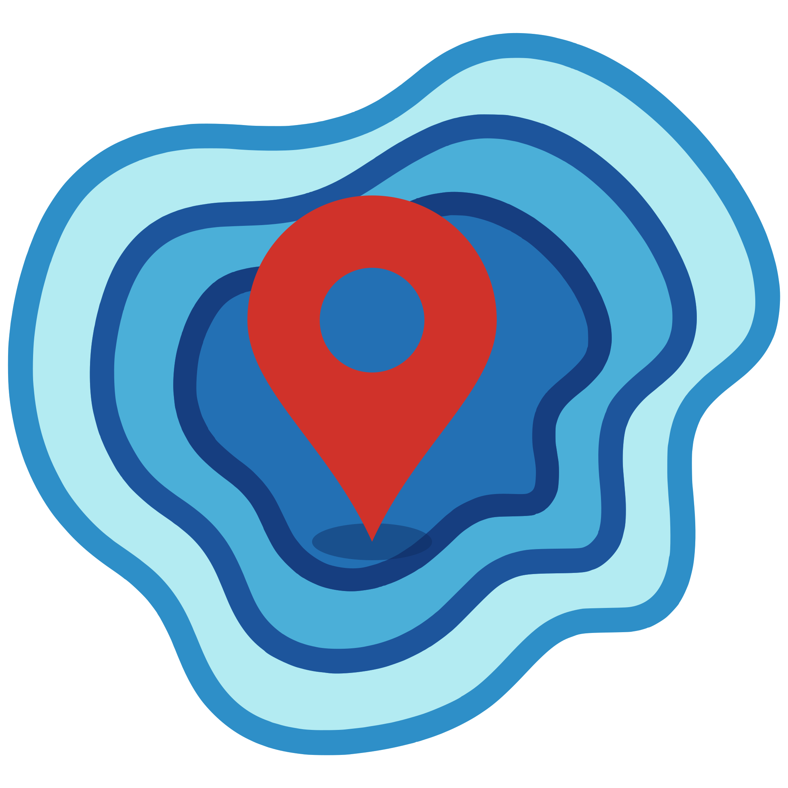
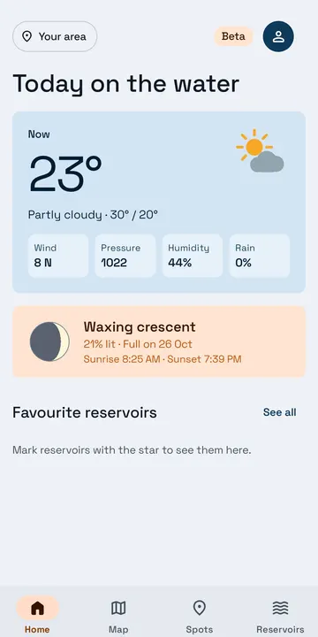
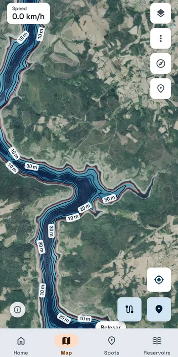
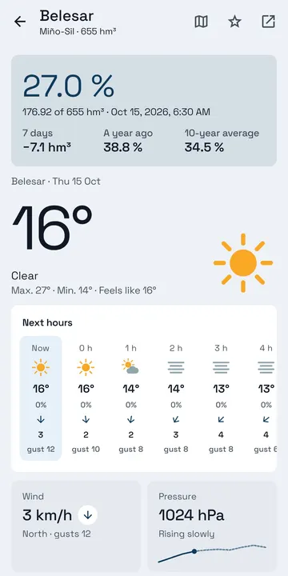

InfoSpotWater levels, maps and old aerial photos, the estimated depth, the weather and your spots, in one place. In the browser, on your phone or your computer, and as an Android app.
On an iPhone? Use the web version: the iOS app will come later.



Made by an angler for anglers, for the black bass reservoirs of Spain (and the Baixo Sabor in Portugal).
56 reservoirs, updated every week, with their history since 1988 and the 10-year average.
Orthophoto, IGN and topographic maps, and aerial photos from 1956 on: see the old roads, walls and riverbed now under water.
Depth colours and contour lines every 5 m on 42 reservoirs, at today's level or the one you choose.
Now and 7 days hour by hour at each reservoir: wind and gusts, pressure, rain and humidity.
Sunrise and sunset, the moon phase, moonrise and moonset, and the solunar periods.
Mark catches, bites, structure and hazards, record your tracks and move them as GPX. They stay on your device.
The web version works on any phone or computer, with nothing to install. The Android app adds what only an app can do.
| Web | Android | |
|---|---|---|
| Levels, history and weather | ✓ | ✓ |
| Maps, old photos and estimated depth | ✓ | ✓ |
| Spots, tracks and GPX | ✓ | ✓ |
| Maps without coverage | – | ✓ |
| Daily summary and weather alerts | – | ✓ |
| Recording a track with the screen off | – | ✓ |